The slide of the lecture is on the left, the same figure or table on the right, computed in the browser from the same data. The ▶ button moves the parameter step by step; the “Worked example” boxes redo the calculation with the numbers of the chapter.
From one series to several · The VAR(p) model · Stationarity and the companion form · Estimation and lag selection · Residual diagnostics · Granger causality · Impulse responses · Forecast error variance decomposition · Forecasting with a VAR · Structural VARs and a landmark case study
From one series to several
Romania: four macro series that move together
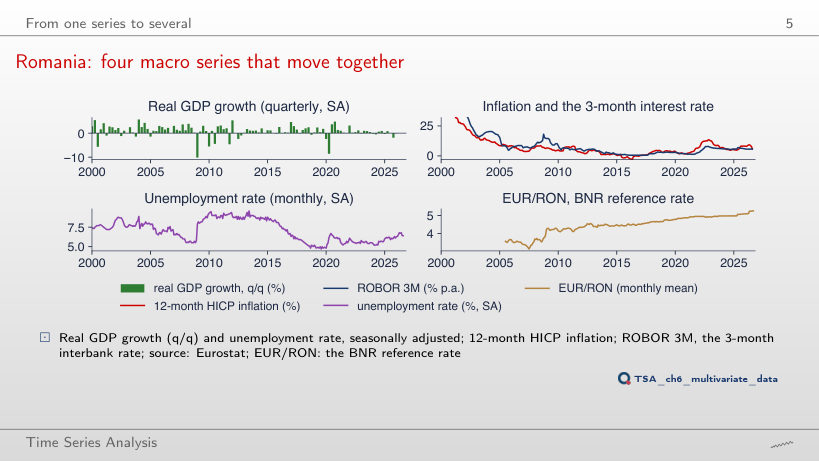
Answer
0.89, against 0.66 over 2005–2026. After 2015 the two series rose and fell together (inflation reached 13.6% in November 2022, ROBOR 3M 8.0% in October 2022), and the 2008 episode, when ROBOR reached 18.2% in the liquidity crisis, has left the window. The correlation between the levels of two persistent series depends strongly on the sample and does not say which of them leads the other.
Cross-correlations: markets and Romanian macro data
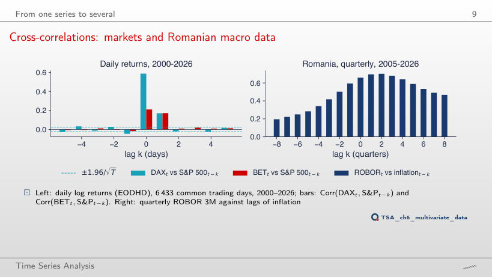
Answer
No: −0.058, outside the band ±0.037; over the whole sample it is −0.046, also outside the band ±0.024. The lead runs mainly from New York to Europe (0.135 at k = 1 since 2015, 0.171 over the whole sample), but not in one direction only: yesterday’s DAX also has a small negative correlation with today’s S&P 500. For the BET the value at k = −1 (−0.005 since 2015, −0.017 over the whole sample) stays inside the band.
The VAR(p) model
Worked example: a VAR(1)
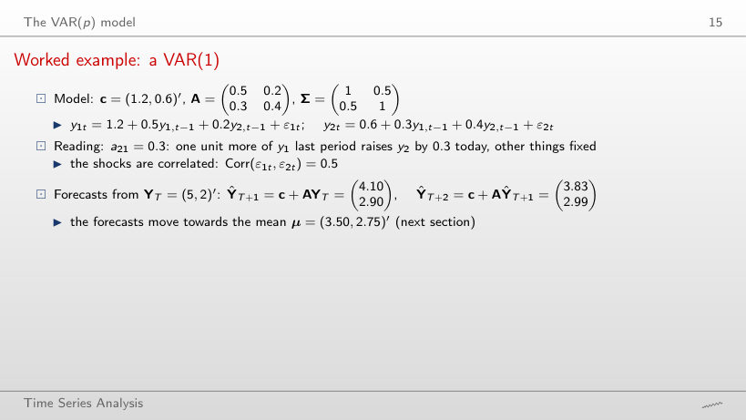
Worked example
Answer
No. tr(A) = 0.9 and det(A) = 0.5·0.4 − 0.5·0.8 = −0.20, so λ = (0.9 ± √1.61)/2: λ₁ = 1.084 and λ₂ = −0.184. The largest modulus exceeds 1 and the forecasts grow without bound (ŷ₁ = 16.48 at h = 8). Stability depends on the eigenvalues, not on the size of each coefficient: the cross effects a₁₂a₂₁ = 0.40 add to the own persistence. With a₁₁ = 0.5 and a₂₂ = 0.4, the VAR is stable only if a₁₂a₂₁ < 0.30.
The worked example, simulated
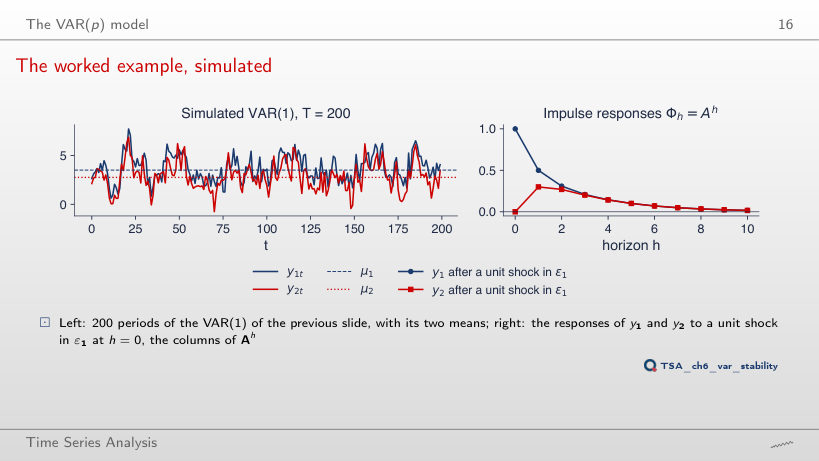
Worked example
Answer
0.187, not 0.8⁵ = 0.328. Φ₁₁(h) = 0.571·0.8ʰ + 0.429·0.1ʰ: the dominant component enters e₁ with weight 0.571, and the ratio Φ₁₁(h)/Φ₁₁(h−1) approaches 0.8 only after a few periods. The same holds in the lecture’s example: Φ₁₁(5) = 0.6·0.7⁵ + 0.4·0.2⁵ = 0.101, so after 5 periods about 0.10 of the initial effect is left; 0.7⁵ ≈ 0.17 is the factor by which the dominant component shrinks, not the response.
Stationarity and the companion form
Eigenvalues of three estimated VARs
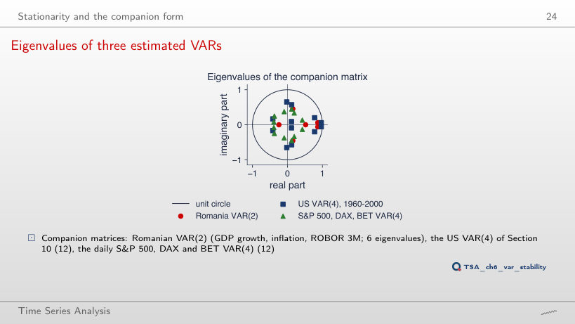
Answer
0.913, out of 15 eigenvalues (the companion matrix is 15 × 15), against 0.869 out of 6 for p = 2; a shock halves after 7.7 quarters, against 5.0. Extra lags add eigenvalues, and some with a large modulus (0.874, 0.836) come in complex pairs, i.e. oscillations that the VAR(2) does not have. With 48 coefficients on about 80 quarters, these oscillations may be estimation noise.
Estimation and lag selection
Romanian VAR: which p?
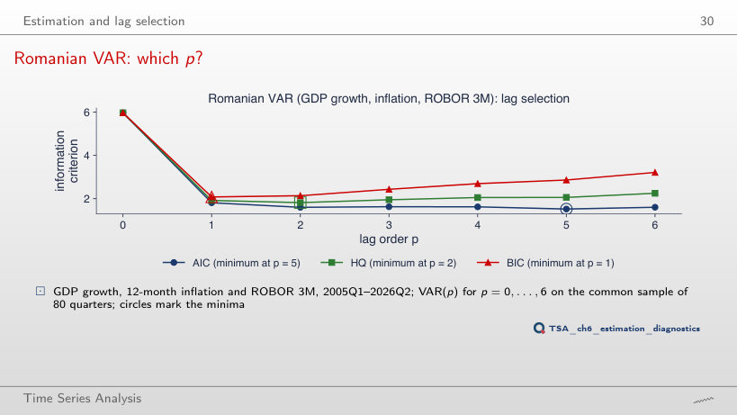
Worked example
Answer
p = 5, like AIC; BIC still chooses p = 1. The common sample has only T = 54 quarters, and ln det Σ̃(5) = −0.446 is far below the value for p = 2 (0.970), because a VAR(5) has 48 coefficients for 54 observations and almost reproduces the data. The HQ penalty, 2 ln ln T = 2.767 per unit of pK²/T, does not offset it. In short samples the criteria can choose large orders: check how many degrees of freedom are left.
The estimated Romanian VAR(2)
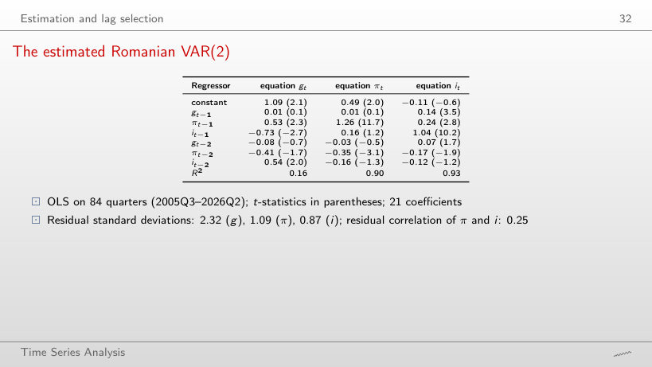
Answer
Yes: 0.21 with t = 3.7, against 0.14 with t = 3.5 over the whole sample; in addition gt−2 becomes significant (0.14, t = 2.3). Without 2020–2026 the R² of the GDP equation rises from 0.16 to 0.30, because the pandemic quarter, with its residual of −9.1, is no longer in the sample. The link between GDP growth and next quarter’s interest rate does not come from the pandemic years.
Residual diagnostics
Residuals of the Romanian VAR(2)
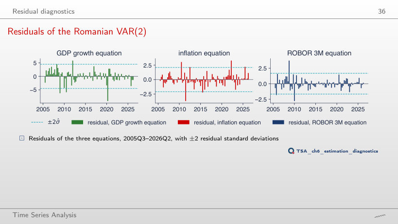
Worked example
Answer
Yes: the statistic falls from 191 to 144 (χ²(6), p < 0.001). The dummies cancel the residuals of the two quarters, but other extreme values remain: ROBOR +3.5 in 2008Q4, inflation −3.7 in 2011Q3, GDP −5.9 in 2010Q3; the kurtosis of ROBOR stays 7.9. The portmanteau test even gets worse (Q₈ = 88.2, p = 0.002): removing two observations does not make the residuals Normal white noise.
Granger causality
Worked example: does GDP growth Granger-cause ROBOR?
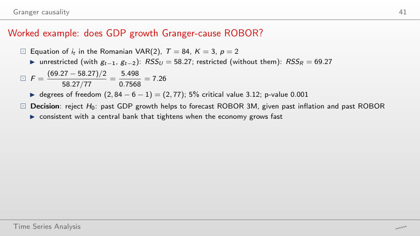
Worked example
Answer
F = 8.50 with (4, 69) degrees of freedom, p < 0.001; the 5% critical value falls to 2.50. Four restrictions are now tested: RSSR − RSSU = 64.08 − 42.93 = 21.15 is divided by 4, and RSSU by T − Kp − 1 = 82 − 12 − 1 = 69. The conclusion does not depend on p: with p = 1, F = 10.63 (p = 0.002).
Granger causality in the Romanian VAR(2)
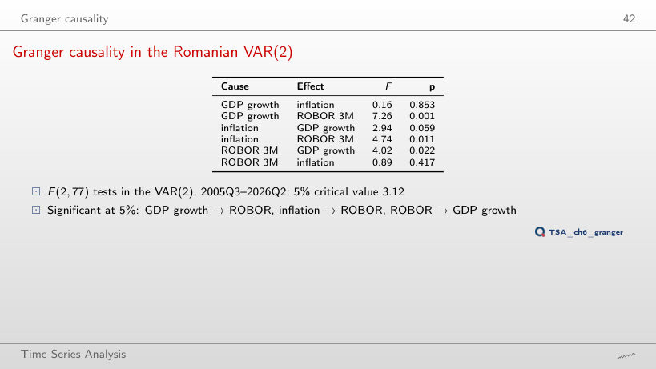
Answer
No: F = 2.46, p = 0.096, against 4.74 (p = 0.011) over the whole sample. On the other hand, inflation → GDP growth becomes significant (F = 6.27, p = 0.004). Without 2021–2023, when inflation climbed to 13.6% and ROBOR rose with it, the link from inflation to ROBOR is no longer separated from noise on 58 quarters. Granger results depend on the sample, not only on the set of variables.
Markets: does New York lead Frankfurt and Bucharest?
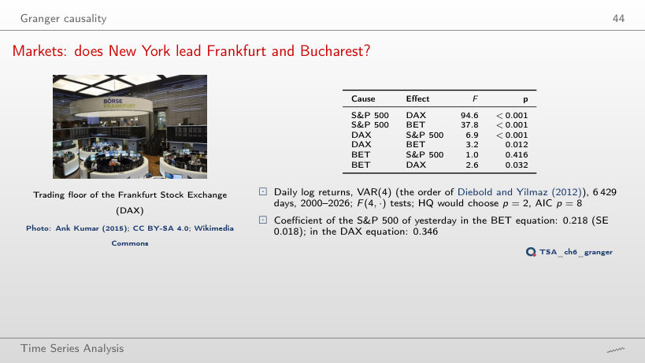
Answer
No: F = 1.1, p = 0.369 (over 2000–2026: F = 3.2, p = 0.012). S&P 500 → BET stays very strong (F = 22.5), and the coefficient of yesterday’s S&P 500 in the BET equation falls from 0.218 to 0.183. With 4,033 days the test has a lot of power, so p = 0.369 shows that the DAX → BET effect, given the S&P 500, is small after 2010; it does not show that it is exactly zero.
Spurious Granger causality from an omitted variable
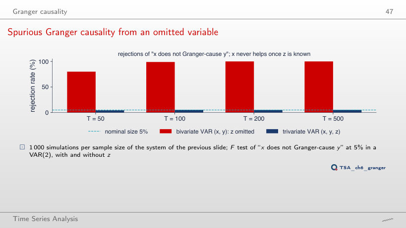
Answer
5.6%, close to the nominal 5% (between 4.5% and 5.6% for all sample sizes), against 100% with the effect 0.8 and 100% with 0.4. x looks like a cause of y only because xt−1 is a noisy measure of zt−2, which drives yt. The lag order matters too: with p = 1 even the VAR with z rejects in 76%–100% of the cases, because one lag of z does not contain zt−2, and xt−1 stands in for it.
Impulse responses
Worked example: orthogonalised responses
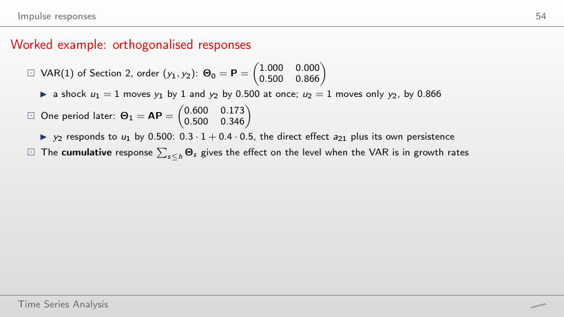
Worked example
Answer
0 on impact and 0.260 one period later (0.3·0.866 + 0.4·0), against 0.500 and 0.500 in the order (y₁, y₂). With y₂ first, the whole correlation of 0.5 is assigned to the shock u₂, which moves y₁ by 0.500 on impact; u₁ reaches y₂ only through a₂₁, one period later. The same VAR and the same data give different responses: the ordering is an assumption.
Impulse responses of the Romanian VAR(2)
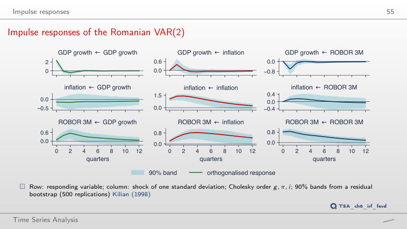
Worked example
Answer
0 on impact, by construction, and 0.64 pp after 4 quarters, against 0.23 and 0.82 pp in the lecture’s ordering; the band excludes zero at 9 of the 13 horizons, against 11. With ROBOR first, the common part of the two shocks (residual correlation 0.25) is assigned to ROBOR. The qualitative conclusion stays: ROBOR rises after an inflation shock and stays higher for years (0.38 pp after 12 quarters).
Does the ordering change the answer?
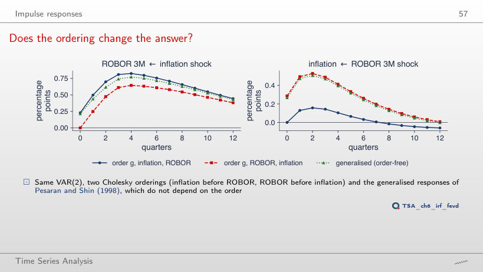
Worked example
Answer
No: the largest response is 0.00 pp, on impact (zero by the ordering), and the response is negative afterwards; with p = 2 it rose to 0.16 pp. With ROBOR first, the impact is 0.29 pp in the VAR(1) as well, because the ordering assigns the common part of the shocks to ROBOR. The “puzzle” depends here on both the ordering and the number of lags: a result that changes with p and with the ordering is fragile.
Markets: responses to an S&P 500 shock
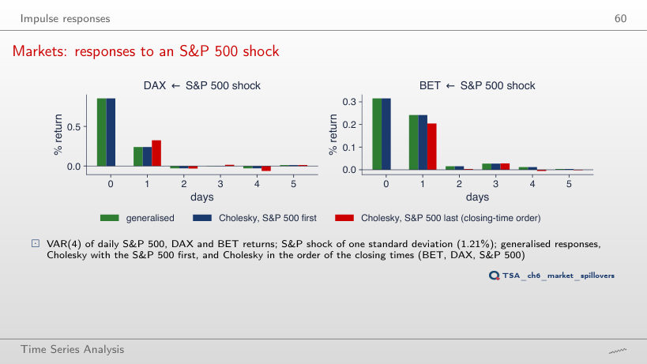
Worked example
Answer
0.11%, against 0.24% over 2000–2026; the same-day response stays 0.32%. For the DAX the response falls from 0.85% to 0.68% on the same day and from 0.24% to 0.16% the next day. The next-day part, which comes from the different closing times, is about half as large after 2015.
Forecast error variance decomposition
Forecast error variance decomposition
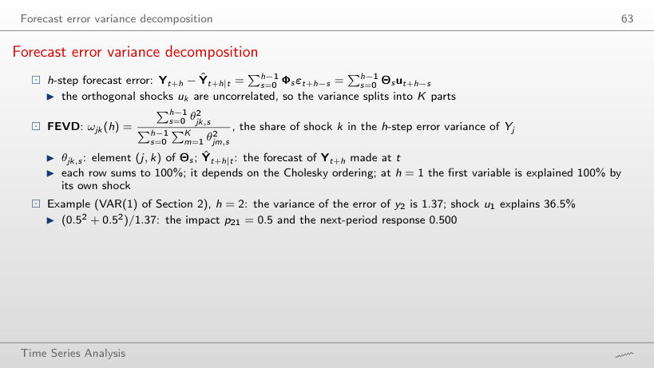
Worked example
Answer
10.6%, against 45.8% in the order (y₁, y₂); at one step the share is 0%. With y₂ first, u₁ reaches y₂ only through a₂₁ = 0.3, one period later (0.260 at h = 1), and the sum of the squares of these responses is 0.182 out of 1.724. The error variance does not change (1.72 at h = 10 in both orders); only its split between the shocks does.
FEVD of the Romanian VAR(2)
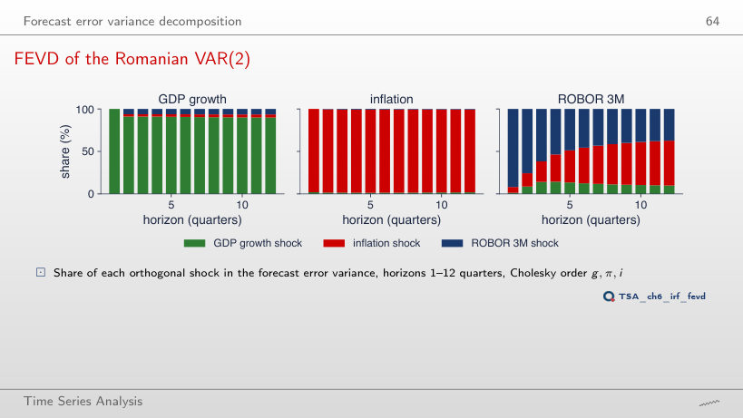
Worked example
Answer
27%, against 53% in the lecture’s ordering; ROBOR’s own shocks explain 63% instead of 37%. At one quarter ROBOR is explained 100% by its own shock, by construction. The conclusion that in the long run the interest rate is driven mainly by inflation therefore rests on the assumption that ROBOR reacts to inflation within the quarter, not the other way round.
Spillover table: S&P 500, DAX, BET
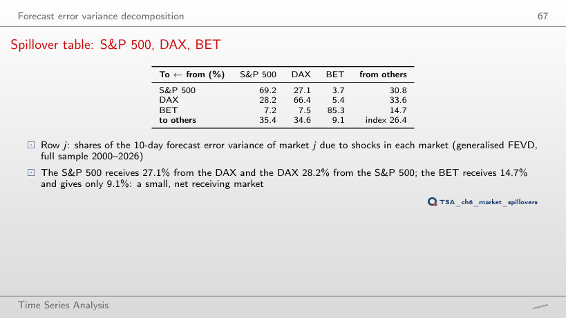
Worked example
Answer
49.0%, against 14.7% over 2000–2026; the index rises to 51.2% (26.4% over the whole sample), and the BET transmits 45.3% instead of 9.1%. In the pandemic year the markets moved together. A single year has only 237 days for the 39 coefficients of the VAR(4), so the table of one year is noisier; in 2017, a calm year, the index is 24.4% and the BET receives 13.2%.
The spillover index over time
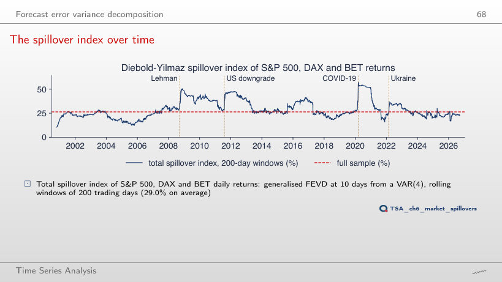
Answer
47.3%, on 22 September 2021, against 57.5% on 17 March 2020 with 200-day windows. A longer window mixes the crash of March 2020 with more calm days, so the peak is lower and comes later; the mean stays almost the same (29.1% against 29.0%). The size and date of the peaks depend on the window length: part of the jumps is mechanical.
Forecasting with a VAR
Romanian VAR(2): forecasts for two years
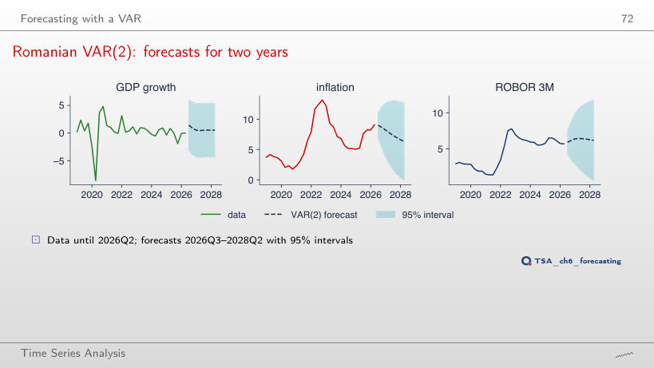
Worked example
Answer
No: 13.2% realised, against a forecast of 2.4% and the interval [−2.3; 7.1]. The VAR estimated up to 2020 contains none of the energy-price shocks of 2021–2022, and the interval assumes Normal shocks with the past variance and ignores parameter uncertainty. With the origin 2019Q4, the inflation of 2021Q4 (6.4%) was still inside the interval ([−2.0; 7.7]).
VAR against univariate benchmarks
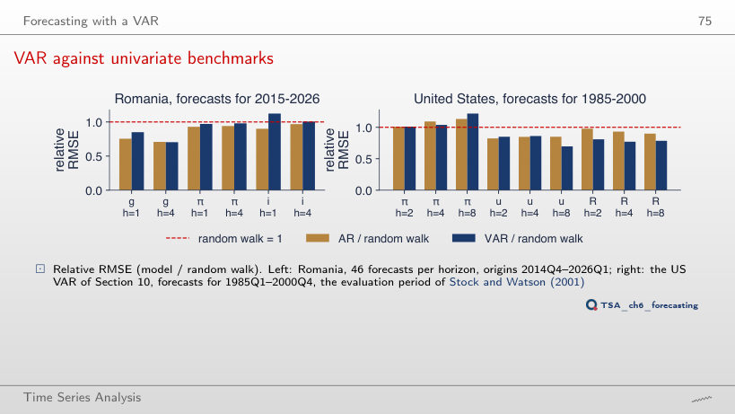
Answer
Not at 5%: relative RMSE 1.06 for the VAR and 0.76 for the AR, but DM = 1.74, p = 0.082, on only 22 forecasts. The difference still favours the AR, and the VAR is now less accurate than even the random walk; with half the forecasts, the test no longer separates it from noise at 5%.
Structural VARs and a landmark case study
The three US series
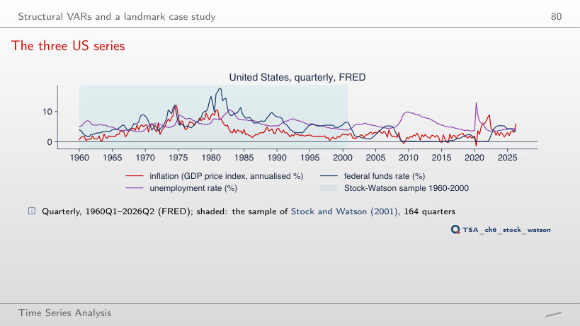
Answer
4.78%, against 6.59% in 1960–2000; the correlation of unemployment and the rate falls from 0.29 to 0.05. After 2008 and in 2020 the rate stayed close to zero (minimum 0.06%), and inflation went down to −1.43%. The extended sample contains a regime that the 1960–2000 VAR never saw.
Stock–Watson VAR: impulse responses
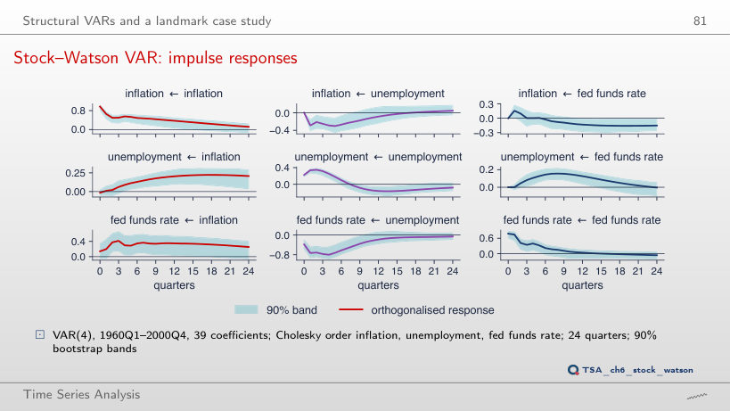
Answer
Negative: −0.13 pp, against +0.05 pp in 1960–2000 (where the peak is 0.16 pp after 8 quarters). The monetary shock now explains only 4% of the 12-quarter variance of unemployment, against 19%. The near-zero rates after 2008 and the pandemic change the system, and a VAR with constant parameters on 1960–2026 mixes different regimes: the wrong sign signals that the model is unstable.
Quarterly data for Romania, 2005Q1 – 2026Q2: real GDP growth (Eurostat, the series of the lecture), 12-month HICP inflation and ROBOR 3M (quarterly means). Daily log returns in %, 6,433 common days, 6 January 2000 – 18 September 2026: S&P 500, DAX and BET (EODHD). United States: FRED (GDPCTPI, UNRATE, FEDFUNDS), 1960Q1 – 2026Q2. The VARs, tests, impulse responses, FEVDs and the spillover index are re-estimated in the browser by OLS; the initial states are those of the lecture. The bootstrap bands of the Romanian responses use the draws of the chapter’s seed (500 replications); the simulated VAR(1) uses the Normal draws of the same seed. Variants that do not appear in the lecture (another lag order p, another Cholesky ordering, another sample, other windows, other effects in the simulation) are extra runs of the chapter code with the same data and seed; the spillover index with other windows or another horizon is computed every 5 days.